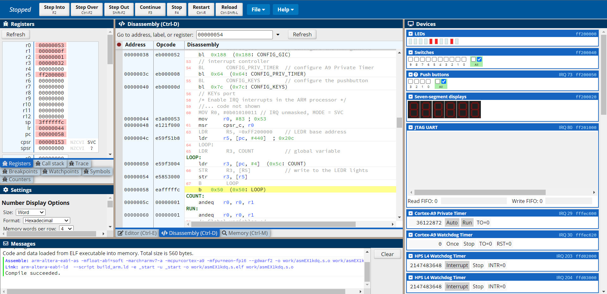

1. Memory mapped I/O and Interrupts
Implemented a counter mapped to the LEDs of an FPGA. The speed of the counter could be controlled using timer and switch interrupts. The interrupts were implemented using the ARM Processor Generic Interrupt Controller (GIC).